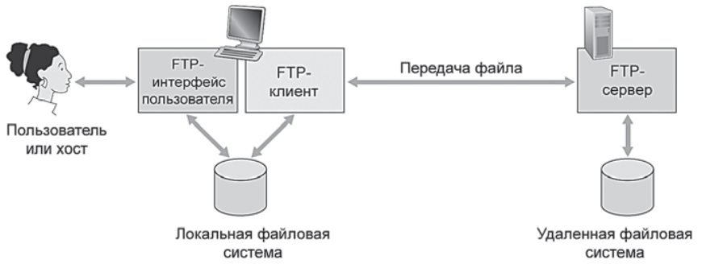
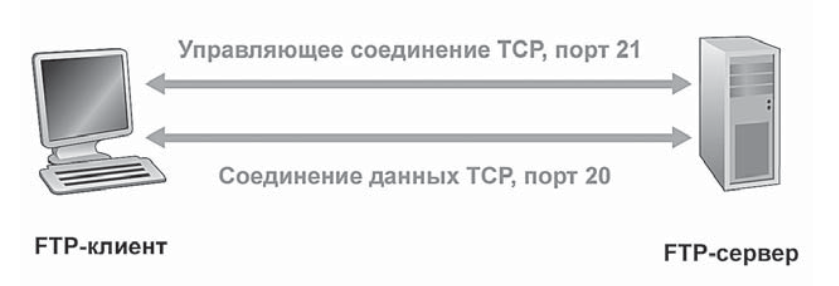

Типичный FTP-сеанс представляет собой передачу файлов пользователю, сидящим за одним локальным хостом, на другой удаленный хост или обратно. Для этого пользователь должен ввести идентифкатор и пароль, и после чего станет способен передавать файлы из локальной системы в уадленную и обратно.
Как показано на рис. ниже юзер взаимодействует с проколом FTP через пользовательский агент FTP. Сначала пользователь предоставляет имя удаленного хоста, заставляя клиентский процесс на локальном устройстве уствновить TCP-соединение с процессом FTP-сервера на удаленном хосте. Затем вводит идентифкатор и пароль, котоыре отправляются через TCP-соединение в составе FTP-команд. Как только сервер авторизует пользователя, тот может копировать один или несколько файлов, хранящихся на локальной системе, в удаленную систему (или наоборот).
Протоколы HTTP и FTP являются протоколами передачи данных и имеют много общего. Они работают поверх протокола TCP. Однако, они также имеют существенные различия: протокол FTP использует для передачи файла 2 параллельных TCP-соединения: управляющее соединение и соединение данных.
Управляющее соединение используется для отправки контрольной информации между двумя хостами - идентификатор юзера, команды для смены каталога, команды передачи и получения данных.
Соединение данных используется для передачи самих файлов
Говорят, что FTP отправляет управляющую информацию вне полосы (out-of-band). В то же время протоккол HTTP отсылает строки заголовов запроса и ответа в одном и том же TCP-соединении вместе с передаваемыми объектами. Таким образом, протокол HTTP отправляет управляющую информацию внутри полосы (in-band).
Таким образом, управляющее TCP-соединение остается открытым в течение всего сеанса, а для передачи каждого файла внутри сеанса будет всякий раз открываться новое TCP-соединение данных, т.е. соединение данных FTP является неопстоянным.
В течение пользовательского сеанса FTP-сервер должен хранить соединение этого сеанса, т.е. серверу надо как-то связывать управляющее соединение с конкретной пользовательской учетной записью, сервер должен отслеживать текущий каталог по мере того, как он пробегает по дереву каталогов. Такое отслеживание состояния значительно ограничивает число одновременно отслуживаемых сеансов FTP.
Рассмотрим некоторые из наиболее распространенных FTP-команд и ответов.
Команды, посылаемые клиентом серверу, и ответы сервера клиенту передаются по управляющему осединению в виде семиразрядных ASCII-символов.
Для разделения команд используется пара символов: возврат каретки и перевод строки
Каждая команда состоит из 4-х символов ASCII в верхнем регистре и необязательных параметров.
Примеры этих команд представлены ниже:
Обычно одной команде, введенной пользователем, соответствует одна FTP-команда, отправленная через управляющее соединение. На каждую команду сервер дает ответ клиенту. Ответы представляют собой трехзначные числа, сопровождаемые необязательным сообщением
Структура такого ответа похожа на структуру строки состояния ответного HTTP-сообщения с кодом состояния и фразой. Некоторые распространенные ответы FTP-сервера представлены ниже: